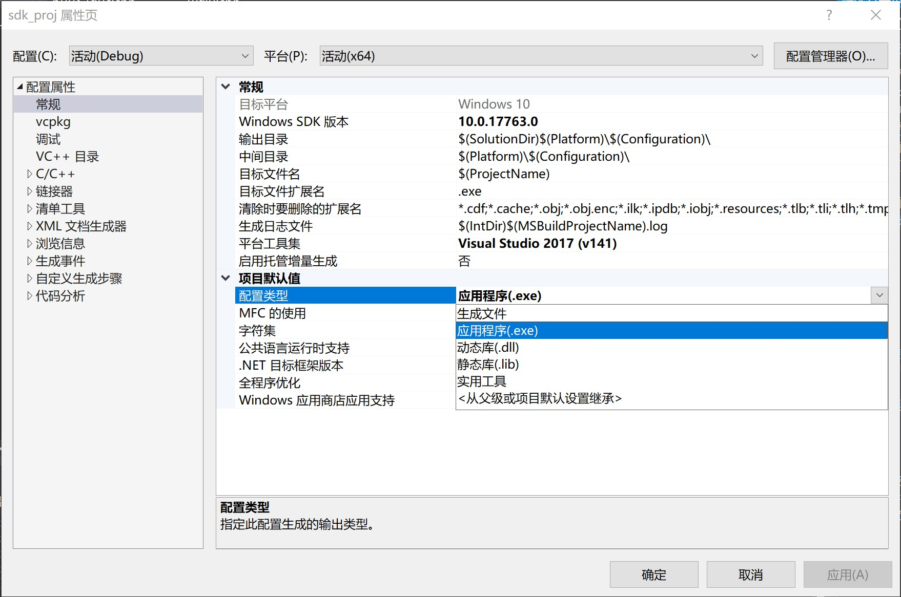
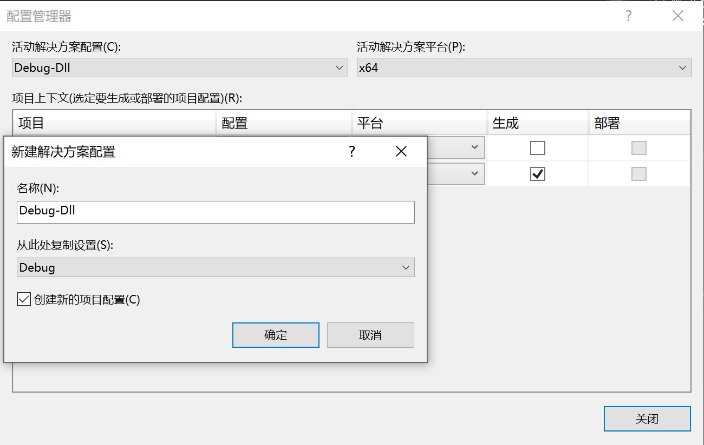
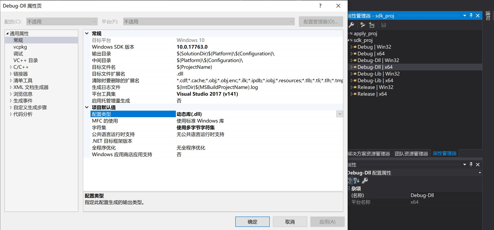
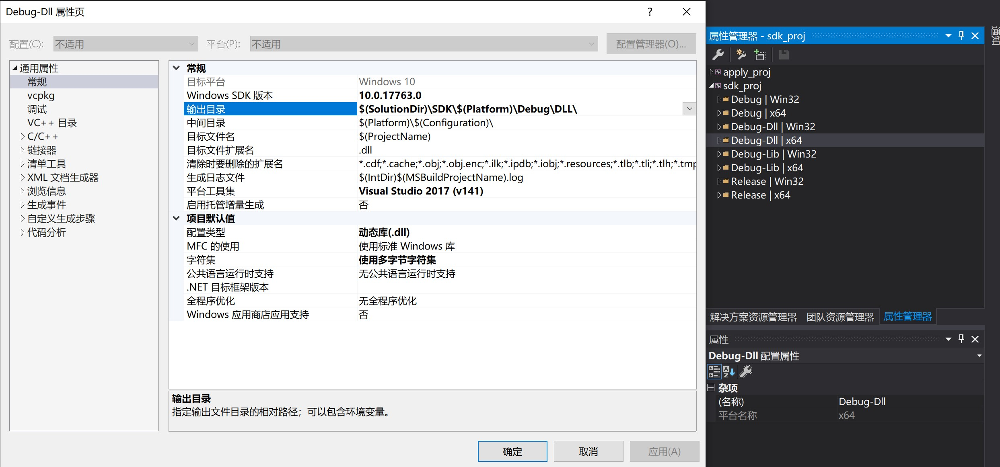

VS2017 输出 dll、lib 文件
为了更好地保护程序源码, 同时开放合适的接口供用户调用进行二次开发,
在项目开发的时候应当遵循接口与实现分离的设计模式, 最终提供给用户的是 .dll 和.lib库文件以及相应的 .h/.hpp 头文件, 这些文件辅以必要的示例代码、文档、工具等组成一个完整的 SDK.
软件开发工具包 (Software Development Kit, SDK) 一般都是一些软件工程师为特定的软件包、软件框架、硬件平台、操作系统等建立应用软件时的开发工具的集合。
软件开发工具广义上指辅助开发某一类软件的相关文档、范例和工具的集合。——《百度百科：软件开发工具包》
本文档记录在 win10 x64 系统上通过 VS2017 为C++ 项目 封装 SDK 的相关操作.
文件组织结构
1 | - SolutionDir(解决方案文件夹) |
VS 生成库文件
简单地要生成 .dll/.lib 库文件只需要在项目属性页中修改配置类型即可, 一般的项目设置为 应用程序(exe), 若要输出动态库或静态库只需修改该项设置即可, 如图.

属性配置
为了项目管理上的简洁、高效, 这里建立专门的配置用于生成库文件, 该配置与项目运行的配置解耦, 即可通过简单地切换不同配置来选择生成 库文件 (.dll/.lib) 还是生成 可执行文件(.exe).
- 新建解决方案配置:
生成->配置管理器->活动解决方案配置->新建-> 命名:Debug-Dll-> 从此处复制设置:Debug-> 勾选:创建新的项目配置->确定.
一个解决方案配置可以设置相应的项目配置, 然后在切换解决方案配置时自动生效.

对应的项目配置可以作如下更改.

修改输出目录

1 | $(SolutionDir)\SDK\$(Platform)\Debug\DLL\ |
分别生成如下文件:
1 | sdk_sln\\SDK\x64\Debug\DLL\sdk_proj.dll |
Notice
- 配置生成库文件后, 只能点击
生成->生成解决方案, 或者右键项目并生成该项目, 但不能运行也不能调试, 因为库文件不能直接运行, 只能被其他可执行文件调用. 常见的报错信息是:
1 | 无法启动程序“*.dll”. |
- 发布 SDK 的时候需要附上头文件(include), 但可以不用提供源文件(src)
Reference
VS2017 输出 dll、lib 文件